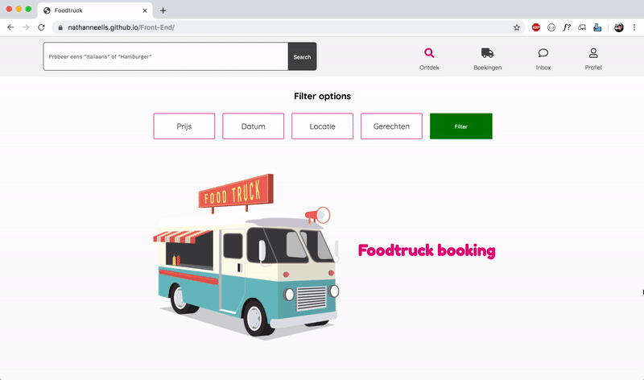
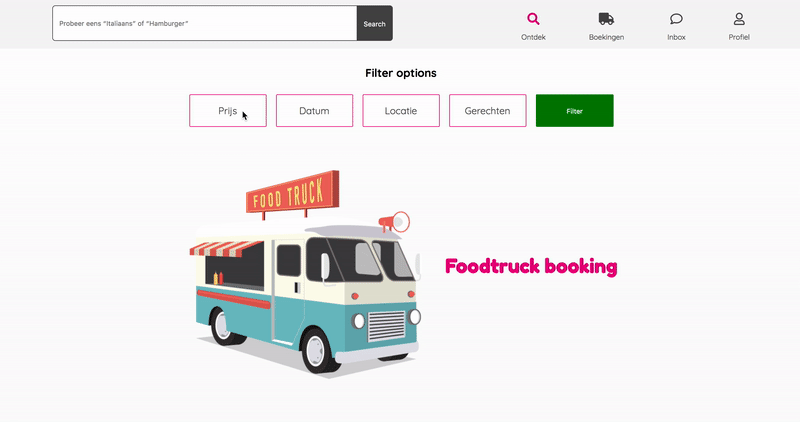

Assignment
For this assignment, I had to take a design for a food truck service from a previous course and
build it by using HTML, CSS and JavaScript. The focus of this course was not on the content of the
website but on learning the semantics of HTML and new techniques in CSS.
In previous courses I learned the basics of JavaScript but in this project I learned how to apply it
to a website.
Description
Are you looking to rent a food truck? Then you are in the right place! On this website, you can
search and filter until you find your favorite food truck. You can read more about it by visiting
the detail page and even take a peek at the menu card. If you have made your choice, contact the
food truck and check for availability.
Highlights
Flexbox
During this course, I learned more about flexbox and how it can be applied effectively. By Using
flexbox I started to get a feeling of its usefulness and this will probably change my coding future.
The image below shows the code where I applied flexbox the Foodtruck website.
Responsive
The website was made responsive by using flexbox, grid and units like EM, REM, VW and VH. By using
these techniques the code I had to add in a media query was minimal.

JavaScript
On this website, I applied some interactive elements by using JavaScript. I created a toggle for a
CSS class so when you use the filter options the input fields appear. The slider for the price also
gives you feedback on the amount you are selecting.
